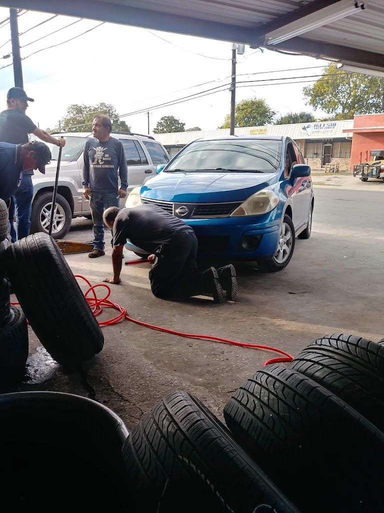
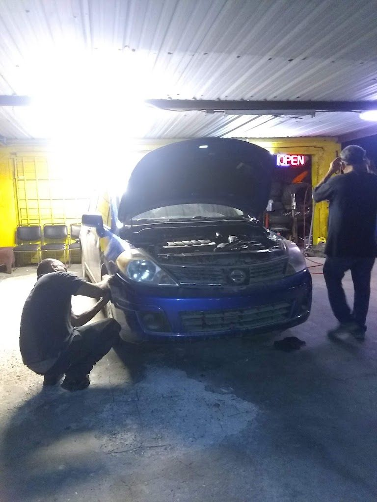
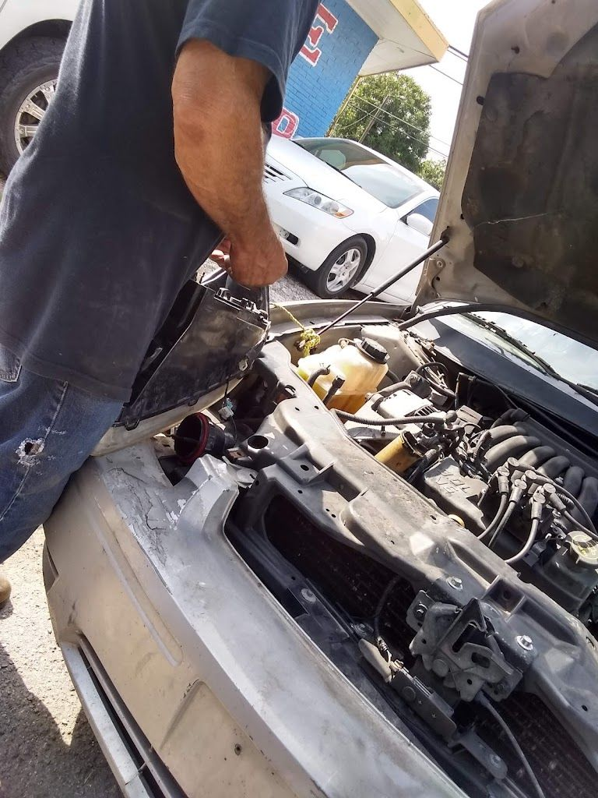
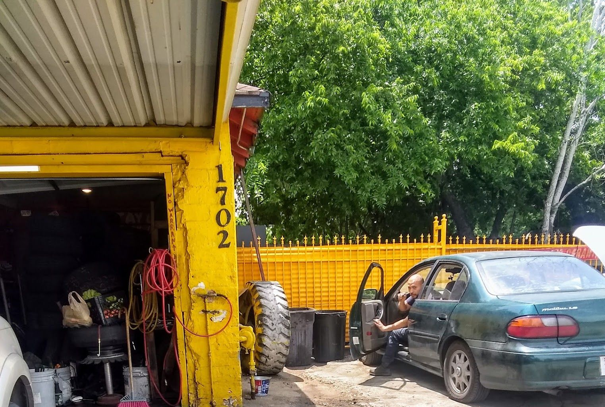
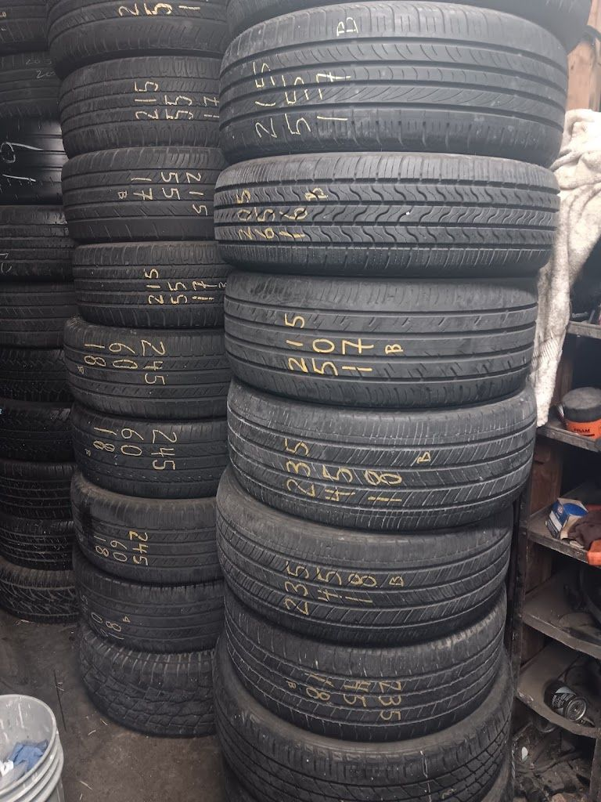
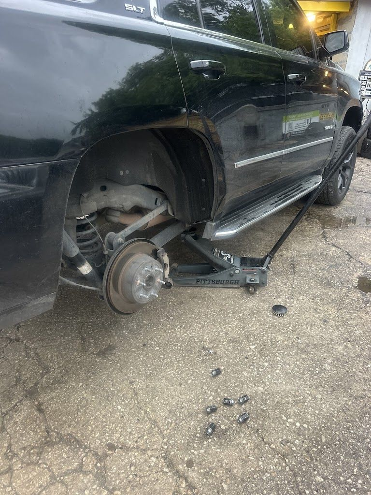
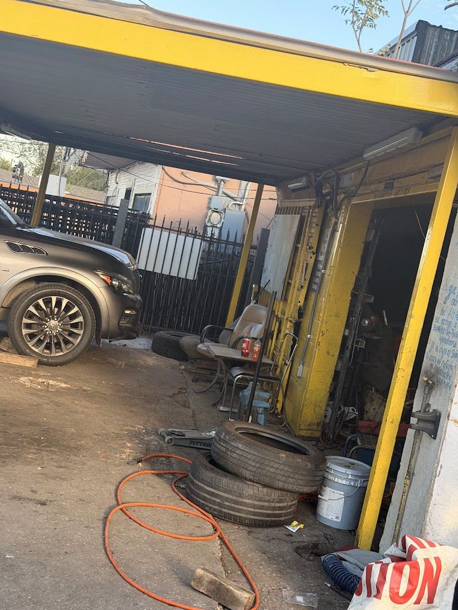
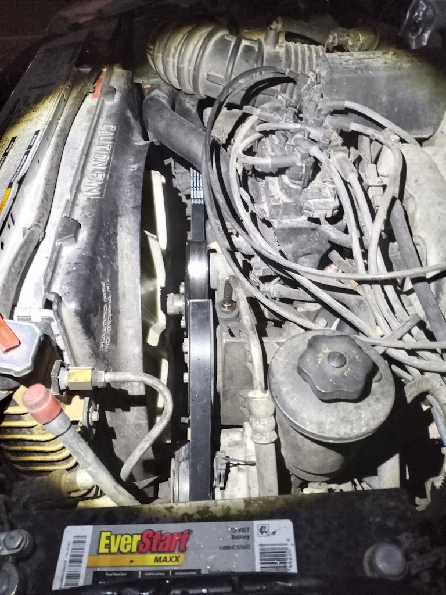
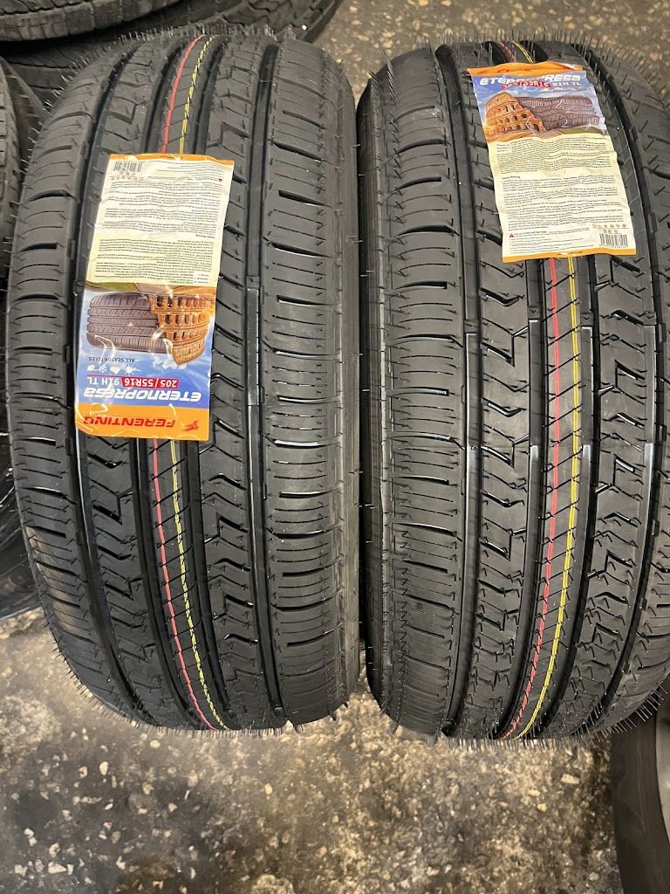

1702 Castroville Rd San Antonio, Texas
We come to you.
Tires, brakes, AC, diagnostics and honest repair from the mom-and-pop shop on Castroville Rd. Drive it in, or call and we roll to wherever it quit on you.
Mobile mechanic & roadside
Stranded? We roll to you.
A belt that snaps on the highway, a battery that won't wake up, a flat on the shoulder of Castroville. You call, a mechanic loads the truck, and the repair happens where the car sits: your driveway, your office lot, the side of the road.
We cover:
San Antonio · New Braunfels · Boerne · Universal City · Schertz
“My serpentine belt busted while I was driving on the highway near downtown. I called Brian and he showed up in less than 30 minutes and replaced it really quick. I was back on the road in no time.”— Miguel Sierra, Google review
What we do
Fix it here. Or fix it there.
All makes and models, priced like a neighborhood shop instead of a dealership. Most jobs start with a phone call.
Mobile Mechanic
Repairs at your home, work or curb. We bring the tools and the parts, you keep your day.
Roadside Assistance
Dead battery, flat tire, a belt or hose that quit mid-drive. Call and we roll.
New Tires
New and used tires, mounted and balanced while you wait. Straight talk on what you actually need.
Brake Repairs
Pads, rotors and lines, inspected and fixed properly, not eyeballed.
Auto AC Repair
San Antonio summers don't wait, and neither do we. Recharges, compressors, leaks found and sealed.
Computer Diagnostics
We plug in, read the codes, and tell you straight what's wrong and what it takes to fix it.
Transmission Repair
From fluid services to full repairs, on domestic and import cars alike.
General Auto Repair
The everything-else category: alternators, radiators, belts, suspension, oil changes, the warning light you've been ignoring.
Word around the neighborhood
Reviews from real customers.
★★★★★
“This little mom-and-pop shop is definitely worth checking out. The atmosphere is welcoming, the people are friendly, and you don't feel like just another customer. I've never been disappointed.”SpeakEasy — Google review, October 2026
★★★★★
“My AC went out in the middle of summer. It turned out to be a $20 part and he didn't even want to charge me for labor. Now that is an honest mechanic.”Miguel Sierra — Google review, September 2026
★★★★★
“Brian has helped with all types of things with my car, from tires to oil changes, my compressor, brakes. He's very knowledgeable and knows what is wrong right away.”Rachel Lozano — Google review, September 2026
The people under the hood
A neighborhood shop, not a chain.
You'll know this place when you see it: the yellow building with the number painted on the pillar, the tire stacks, the bay doors open. It's the kind of shop where the person who answers the phone is the person who fixes your car.
Customers keep coming back and asking for Brian by name, and the reviews tell you why: he found a $20 part where another shop might have sold a $400 repair, and he treats roadside calls like the emergency they are. That reputation is the whole business, and it's why people drive past the chains on the way here.
Bring the car by, or call and tell us what it's doing. If it can't make the drive, that's what the truck is for.



Straight from the lot
The shop, as it is.
Real photos from our Google listing. No stock photography, because you're trusting the people in these pictures with your car.






Come by, or call first
Find us on Castroville Rd.
All American's Tire & Auto Repair
1702 Castroville Rd, San Antonio, TX 78237
- Monday – Friday
- 9:30 AM – 6:00 PM
- Saturday
- 1:00 PM – 9:00 PM
- Sunday
- 9:30 AM – 6:00 PM
Mobile mechanic and roadside assistance run 7 days a week. Stranded outside shop hours? Call anyway and we'll tell you when we can get to you.